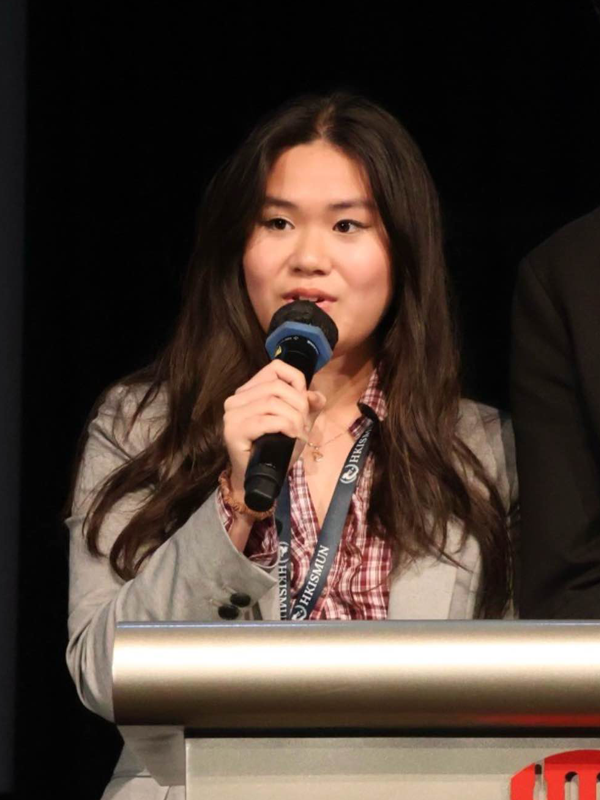

Sofia
Passionate about sustainable fashion and environmental education, Sofia brings creative vision to Refyber. Her drive to transform how students perceive textile waste has been the catalyst for our workshop programs and community outreach.
Meet the people behind Refyber
Passionate about sustainable fashion and environmental education, Sofia brings creative vision to Refyber. Her drive to transform how students perceive textile waste has been the catalyst for our workshop programs and community outreach.

With a focus on practical solutions and community impact, Ashleigh leads Refyber's operational initiatives. Her dedication to turning textile waste into resources for those in need has shaped our shelter supplies program.
But where others saw waste, we saw potential. At Refyber, we believe that every fiber has a story worth retelling. By working with textile waste, whether it is clothing or even the smallest particle of microfiber, we're not just addressing an environmental issue, but instead redefining how society perceives it. We transform what's been overlooked or thrown aside into something meaningful and beautiful.
Our mission is to contribute to a society that values creativity over consumption, and renewal over disposal.